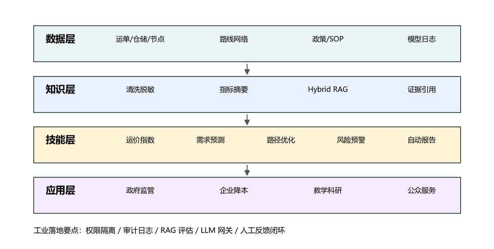
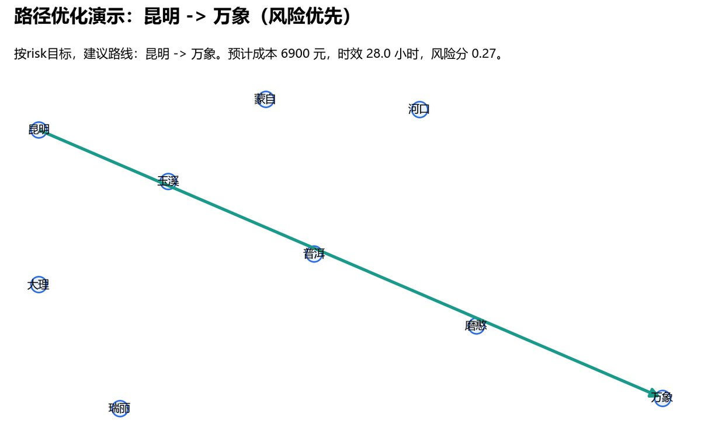
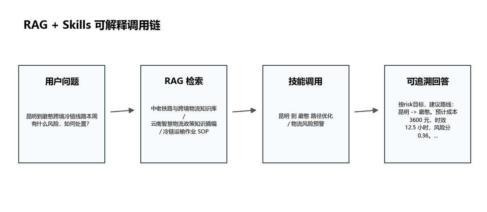

RAG + 工具调用 + 数据分析 Skills
物流大数据垂直大模型应用原型
面向物流公共服务平台中的智能问答、运价分析、路径优化、风险预警和自动周报场景，构建一个可离线演示的垂直大模型应用原型。
RAGStreamlitDijkstra自动周报

数据资产
模拟运单1766 条
仓储记录222 条
节点风险296 条
路线边32 条
系统展示
运行态势面板

路径优化演示

RAG 与技能调用链
应用能力
结构化数据分析
运单、仓储、节点和路网数据进入指标层，用于运价、风险、需求和路径类任务。
知识库检索
政策、冷链 SOP、铁路通道、风险处置和数据治理文档统一进入检索链路。
领域工具调用
金额、路径、预测和风险判断交给确定性 Skills 执行，再由应用层组织成可读报告。